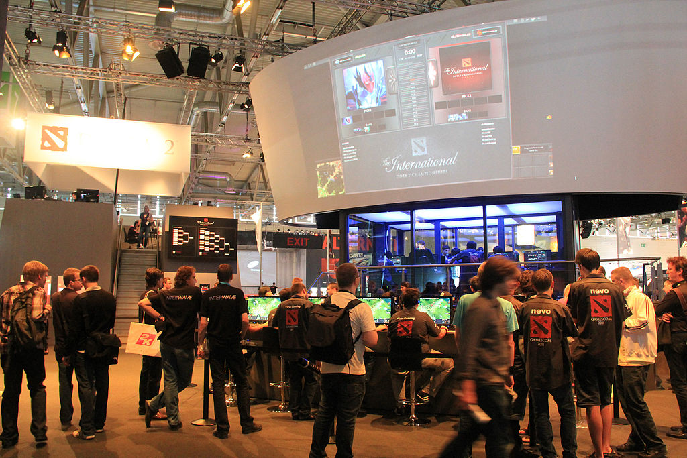
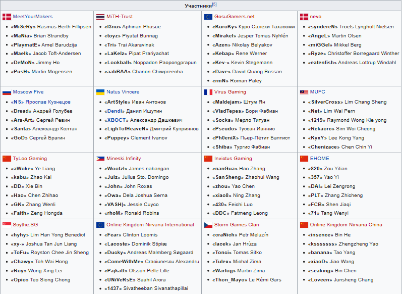
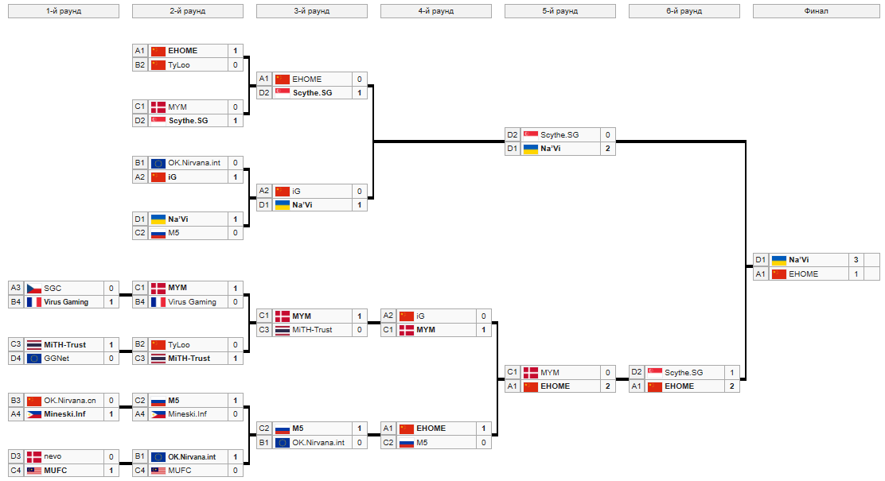

первый в истории турнир по игре Dota 2, проведённый компанией Valve, который был проведён на выставке GamesCom 2011 в Кёльне с 17 по 21 августа 2011 года. Начальный призовой фонд составил 1 600 000 долларов США, дополнительных сборов в фонд не поступало. Сам турнир стал презентацией игры и ежегодным событием киберспортивной сцены. Для освещения турнира были приглашены известные комментаторы, которые в том числе проводили прямые видеотрансляции через сервис Twitch.tv на четырёх языках: китайском, немецком, русском и английском.
В турнире участвует 16 команд. Прямое приглашение на турнир получили все 16 команд со всего мира, которые в то время играли в DotA (Dota 2 на рынке ещё не было). Отборочных не проводилось. Команда StarsBoBa из-за проблем с визой приехать на турнир не смогла, и её место заняла чешская команда SGC. Все участники соревнования получили ключи к игре за месяц до турнира, чтобы иметь возможность подготовиться к нему.
После групповой стадии турнир проводился по олимпийской системе с выбыванием после двух поражений. Команды, занявшие 1 и 2 места в группах попали в верхнюю сетку, остальные в нижнюю. Игры проводились с 18 по 21 августа.
